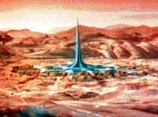
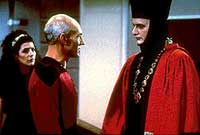
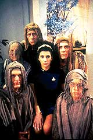
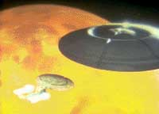
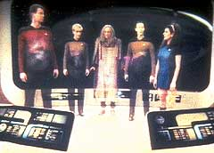
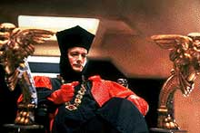
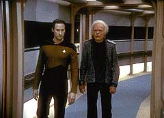

|
MANCHETE
DO EPISDIO
Piloto para nova srie manifesto do
criador a favor da espcie humana
Prximo
episdio
Sinopse:
Data Estelar: 41153.7.
A viagem inaugural da nave
estelar Enterprise NCC-1701-D nos apresenta uma nova tripulao,
que vai iniciar a viagem contnua de explorao de novos mundos.
 O
capito Jean-Luc Picard enviado para investigar a misteriosa e
quase milagrosa estao Longnqua (Farpoint, no original),
estabelecida num planeta cuja localizao considerada vital aos
interesses da Federao.
No caminho, so abordados pelo todo-poderoso Q, que acha que a
humanidade j foi longe demais em sua explorao pelo espao e
est disposto a impedir que a "contaminao" se espalhe
ainda mais.
Com esse objetivo, ele instala um tribunal, colocando Picard e sua
tripulao --representantes dessa humanidade que ele considera brbara--
como rus.
Por sugesto de Picard, Q permite que eles provem o valor da raa
humana completando sua misso na Estao Longnqua. Intrigado, Q
concorda e v at onde o homem pode chegar, quando a verdade por
trs da Estao Longnqua revelada.
Comentrios:
 Durante
vrios anos, Gene Roddenberry protestou contra o carter militar
que a Frota Estelar estava ganhando na srie de filmes para o
cinema envolvendo os personagens da Srie Clssica. Quando a
Paramount o convidou para produzir uma nova srie baseada no
universo de Jornada nas Estrelas, Gene agarrou a oportunidade com
unhas e dentes a fim de levar o franchise novamente ao rumo certo.
No episdio-piloto duplo de Jornada nas Estrelas - A Nova Gerao,
"Encounter at Farpoint", Gene tentou
trazer de volta o seu idealismo, propondo o conceito de que o ser
humano est em constante transformao, e na maioria das vezes,
para melhor.
Gene decidiu que a humanidade do sculo 24 no seria violenta como
o foram seus ancestrais, mas estaria sempre buscando uma maneira de
resolver os problemas pacificamente.
 Ao
encontrar a entidade Q, a tripulao da recm-comissionada USS
Enterprise (NCC 1701-D) por vrias vezes tentada a usar de violncia.
No entanto, em nenhum momento a soluo buscada por mtodos
violentos. Quando a Enterprise dispara torpedos fotnicos, no tem
como meta destruir ou danificar o perseguidor, mas sim ceg-lo para
que a seo-disco pudesse escapar ilesa. Quando a nave aciona seus
bancos feiser, no busca destruir, mas sim alimentar a criatura com
a energia necessria para que ela pudesse voltar ao espao.
Assim, mais do que a histria de Q julgando a raa humana, "Encounter
at Farpoint" o manifesto de Gene Roddenberry a
favor da humanidade.
Mas alm de transmitir o ideal do Grande Pssaro da Galxia, o
episdio tem como objetivo apresentar os novos elementos da srie
incorporados em A Nova Gerao. Assim, vemos a primeira apario
do holodeck, notamos que a nova Enterprise pode se separar em duas
sees, conhecemos os seus limites de velocidade, e temos um
primeiro contato com os personagens.
 Como
piloto o episdio funciona bem, embora apresente alguns defeitos,
que ainda persistiriam por quase toda a primeira temporada.
Olhando especificamente para o enredo, como uma introduo para a
srie, at que serve. Mas para ser bem sincero, o roteiro at
fraquinho. Tem alguns mritos, mas est longe do que A Nova Gerao
pode oferecer.
Os personagens regulares esto muito estereotipados, e chegam a ser
ridculos em alguns momentos. Temos o capito ranzinza, o corajoso
primeiro-oficial, a esquentadinha chefe de segurana, o andride,
o cara com o visor, a sensitiva, a doutora e seu filhinho espertinho
e o klingon idiota.
Muito pouco, para que a srie atingisse o seu potencial total. Os
personagens tem momentos terrveis, como o que o tenente Worf quase
arromba a tela principal da ponte com seu feiser quando Q nela
aparece. O episdio se salva neste quesito por apresentar um
personagem, que embora no fosse regular, para a maioria dos
trekkers, como se fosse: o impagvel Q.
 Os
aspectos tcnicos da produo so o ponto alto do episdio. Os
efeitos especiais so muito bons, os novos cenrios para a
Enterprise, a msica, tudo se encaixa perfeitamente. S os cenrios
que fazem o cu do planeta ficam devendo.
O episdio apresenta bons momentos que enriquecem o universo de
Jornada nas Estrelas, como os detalhes a respeito do horror ps-atmico
vivido pela Terra no sculo 21 e a apario do almirante Leonard
McCoy, unindo assim a Srie Clssica e A Nova Gerao num mesmo
universo, tornando Jornada nas Estrelas muito mais coesa como um
todo.
De qualquer modo, foi sucesso de audincia e permitiu que a srie
fosse produzida e chegasse a um nvel de excelncia jamais
atingido por outra srie de fico cientfica. Era Gene
Roddenberry, mais uma vez, audaciosamente indo onde ningum jamais
esteve...
Citaes:
Picard - "Lieutenant,
do you intend to blast a hole through the viewer?"
(Tenente, est querendo abrir um buraco na tela?)
McCoy - "This is a new ship, boy, but she's got the
right name. Now you remember that, you hear?"
(Esta uma nova nave, garoto, mas ela tem o nome certo. Lembre-se
disso, ouviu?)
Data - "I will, sir."
(Lembrarei, senhor.)
McCoy - "You treat her like a lady, and she'll always
bring you home."
(Trate-a como uma dama e ela sempre o trar para casa.)
Riker - "Just hoping this isn't the usual way our
missions will go, sir."
(S espero que esse no seja o modo usual de nossas misses,
senhor.)
Picard - "Oh no, Number One, I'm sure most will be much
more interesting. Let's see what's out there... Engage!"
(Ah no, Imediato, estou certo de que a maioria ser bem mais
interessante. Vamos ver o que h l fora... Acionar!)
Trivia:
  Originalmente, o tripulante congelado por Q se chamaria Graham e no
Torres. Troi tambm seria congelada aps correr para socorrer a
congelada Tasha Yar.
Originalmente, o tripulante congelado por Q se chamaria Graham e no
Torres. Troi tambm seria congelada aps correr para socorrer a
congelada Tasha Yar.
A frase final do episdio, dita por Picard, "Let's see what's
out there... Engage!" (Vamos ver o que h l fora...Acionar!)
foi adicionada apenas na ltima verso do roteiro. Nessa ltima
verso uma cena que estava nas verses anteriores ficou de fora:
Riker apresentado a Geordi LaForge e a um alferes animadinho, de
nome Sawyer Markhan. Riker ouve por acaso Markhan se referir a
Picard com as palavras "o velho burrhog" (algo como um
"porco fuador", que fica escavando o terreno) enquanto a
Enterprise est atrasada.
No roteiro, a cena escrita por D.C. Fontana contendo o Almirante
McCoy apenas o identificava como "Almirante", e sua idade
era 147 anos, e no 137, como est no episdio. Especula-se que
isso foi feito para manter a participao especial de DeForest
Kelley em segredo at as filmagens.

Para participar do episdio, DeForest fez questo de cobrar como
cach apenas o valor estabelecido com base salarial pelo SAG
(Sindicato dos Atores). "Ele poderia ter pedido um bom
dinheiro", disse Bob Justman, um dos produtores desta primeira
temporada, "mas no o fez. Isso realmente me marcou. E a cena
ficou linda, linda!". "Eu quis apenas o salrio mnimo",
disse DeForest mais tarde, "para agradecer a Gene por tudo de
bom que ele fez por mim".
Colm Meaney (O'Brien) no fazia parte do elenco regular nesta
primeira temporada e s voltaria a aparecer no episdio "Lonely
Among Us". Foi a partir da segunda temporada que
seu personagem passou a aparecer mais, culminando com sua transferncia
para a srie Deep Space Nine, durante o 6 ano de produo
da Nova Gerao.
Os Ferengis so mencionados neste episdio, porm somente sero
vistos a partir do terceiro episdio exibido (e stimo a ser
filmado) desta temporada.
Uma cena neste episdio-piloto foi filmado no famoso Parque
Griffith em Los Angeles: a cena no holodeck onde Riker e um
encharcado Wesley Crusher conhecem Data.
Parte da enfermaria da nave Ave-de-Rapina Klingon, utilizada dois
anos antes em Jornada nas Estrelas III, foi utilizada como parte da
parede da sala de Zorn.
Uma curiosidade sobre os ttulos de abertura: Os nomes dos
personagens no apareceram junto aos nomes dos atores, como ocorreu
durante todo o restante da srie.
Data refere a si mesmo como membro da "Classe da Academia de
'78", porm no episdio "Conundrum", do 5 ano e
indito por aqui, em uma tela do painel principal da ponte pode-se
ler claramente que ele formou-se em 2345. Nada mais natural, j que
o primeiro ano da srie acontece durante o ano de 2364.
Ficha
tcnica:
Escrito por D.C. Fontana &
Gene Roddenberry
Direo de Corey Allen
Exibido em 28/09/1987
Produo: 001
Elenco:
Patrick Stewart como
Jean-Luc Picard
Jonathan Frakes como William Thomas Riker
Brent Spiner como Data
LeVar Burton como Geordi La Forge
Michael Dorn como Worf
Gates McFadden como Beverly Crusher
Marina Sirtis como Deanna Troi
Wil Wheaton como Wesley Crusher
Denise Crosby como Natasha "Tasha" Yar
Elenco convidado:
John deLancie como Q
Michael Bell como Zorn
DeForest Kelley como almirante McCoy
Colm Meaney como alferes de comando
Cary-Hiroyuki como Mandarin Bailiff
Timothy Dang como segurana da ponte
David Erskine como vendedor da loja
Evelyn Guerrero como alferes
Chuck Hicks como oficial militar drogado
Jimmy Ortega como tenente Torres
Prximo
episdio
|